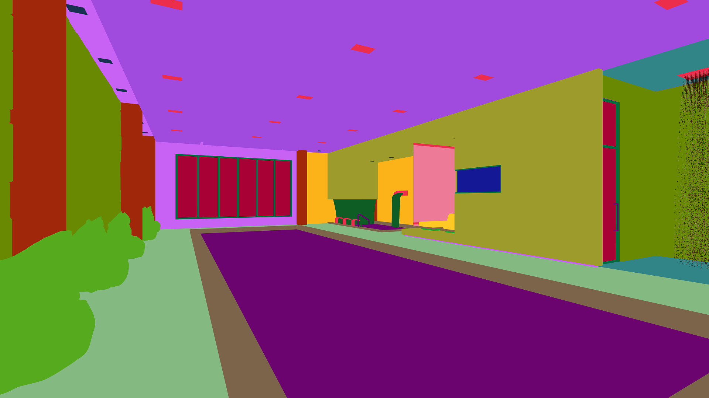

I ran into an interesting problem while working on my engine. I wanted something that sounds trivial from a user's perspective: click on the screen, select the object under the cursor. Turns out it isn't trivial at all.
First Thought: Ray Casting
My first instinct was the classic approach. If the user clicks a pixel, I can construct a ray from the camera through that pixel into the scene, intersect it with objects, and pick the closest hit.
The plan was straightforward enough:
- Convert 2D screen coordinates into a 3D ray
- Intersect that ray with bounding volumes first (spheres, AABBs) to keep it cheap
- Fall back to triangle-level checks only if needed
- Maybe wire up a BVH or octree later for bigger scenes
At this point it felt like the correct, "proper graphics programmer" way to do it.
Then I Hit the Real Problem
All my geometry lives on the GPU. Vertex data is in VBOs. The CPU doesn't have direct access to any of it, and reading it back means pipeline stalls. So to do ray-triangle intersection on the CPU, I'd have to either duplicate all the geometry on the CPU side, or read it back from the GPU every time someone clicks something.
Both options felt wrong. I was doing a lot of work just to replicate something the GPU already does every single frame.
The GPU is literally drawing every object, every pixel, every frame. It knows exactly what is in front. Why am I recalculating that?
Object ID Rendering
While digging into how engines actually solve this, I came across an approach called color picking, or object ID rendering. This was one of those moments where things just clicked.
The idea: instead of computing intersections manually, just ask the GPU what it already rendered.
Here is how it works:
- Assign each object a unique integer ID starting from 1. Zero means "no object."
- Render the scene into an offscreen framebuffer using a flat shader that outputs the object ID as a color instead of the usual lighting result.
- When the user clicks, read the pixel under the cursor with
glReadPixels. - Decode that color back into an ID. That is your selected object.
No ray math. No geometry duplication. No CPU-side intersection tests. Just leverage the rasterization the GPU was already doing.
Encoding IDs as Colors
The simplest approach is to encode each ID as a normalized float and store it in a single color channel:
// Vertex shader: pass through object ID as uniform
uniform float u_objectID;
uniform float u_totalObjects;
// Fragment shader
out vec4 fragColor;
void main() {
float encoded = u_objectID / u_totalObjects;
fragColor = vec4(encoded, 0.0, 0.0, 1.0);
}On the CPU side, after glReadPixels:
// Read back the pixel
GLfloat pixel[4];
glReadPixels(mouseX, mouseY, 1, 1, GL_RGBA, GL_FLOAT, pixel);
// Decode
int selectedID = (int)round(pixel[0] * totalObjects);A few things I learned the hard way:
- IDs start from 1. Zero is reserved for "nothing." Clear the framebuffer to black (0,0,0) so clicking empty space gives you ID 0.
- Round, don't truncate. Floating point encoding introduces tiny errors. I was using
(int)(pixel * total)at first and kept getting the wrong ID by one. Switching toround()fixed it. - Coordinate origin mismatch. Win32 gives you mouse coordinates with the origin at the top-left. OpenGL's
glReadPixelsexpects the origin at the bottom-left. Flip the Y:glY = clientHeight - mouseY - 1. - Only render this pass on click. There is no reason to run it every frame. Trigger it only when a mouse button goes down.
Blender Does This Too
This is not a hack or a workaround. It is a well-established technique. Blender uses the same idea internally for its viewport selection. The image below is what the ID buffer looks like: every object gets a flat, unique color, and the depth test still resolves which one is on top.

Tradeoffs
This approach is GPU-driven, works for any geometry complexity, and gives pixel-perfect results because depth testing is built in. You do not need to maintain any CPU-side spatial structures.
The cost is that glReadPixels forces a CPU-GPU sync. The GPU has to finish rendering before the CPU can read the result, which creates a stall. For a one-time click event that is usually fine. If you were doing hover highlighting on every frame it would become a problem, and you would want to use a pixel buffer object (PBO) to do the readback asynchronously.
There is also a precision limit with float encoding. If you have more objects than the float precision can represent distinctly, IDs start to collide. The fix is to use an integer framebuffer attachment (GL_R32UI) and write the ID directly as an unsigned int, no encoding needed.
Video Walkthrough
The scene has 24 spheres. IDs are encoded as id / totalObjects, so the first sphere (ID 1) maps to 1/24 ≈ 0.04, which renders almost black. The last sphere (ID 24) maps to 24/24 = 1.0, which renders pure white. You can see this gradient in the ID buffer: top-left sphere is nearly black, bottom-right is white. Everything in between is a shade of grey proportional to its ID.